Discoveries & Insights
Our analysis starts with plots of individual variables to assess distributions and data quality. As we progress, we build up multi-dimensional views for our analysis questions.
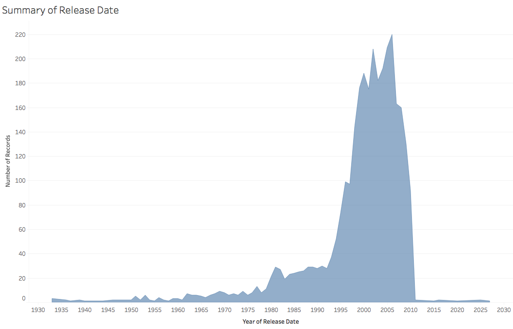
This chart shows the count of movies for each year. The dataset has an uneven distribution, with a long tail of historical films and larger numbers of more recent films (1999-2009). We also see films from the future! These are most likely errors or films in production. As a result, all subsequent views include a filter to remove films with release dates that are either null or have years after 2010 (the publication date of this dataset.)
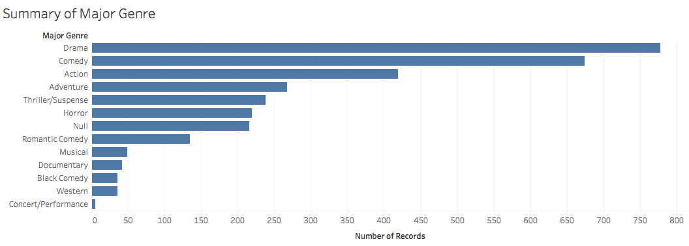
Next, we look at the number of movies by genre, sorted by count. We see that Drama is the most prevalent, followed by Comedy, Action and Adventure. Some of the categories have many fewer films (less than 100) and so due to sampling error may not be as reliable for assessing overall trends. We also see a "Null" category for (presumably) uncategorized films.
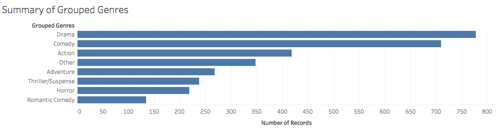
In order to simplify subsequent analyses and ensure a minimum sample size (> 100) per genre, we adjust the genre taxonomy by grouping them together. Here, Comedy and Black Comedy have been merged together, while the Null genre and all other groups with less than 100 films have been combined into a new "Other" category.
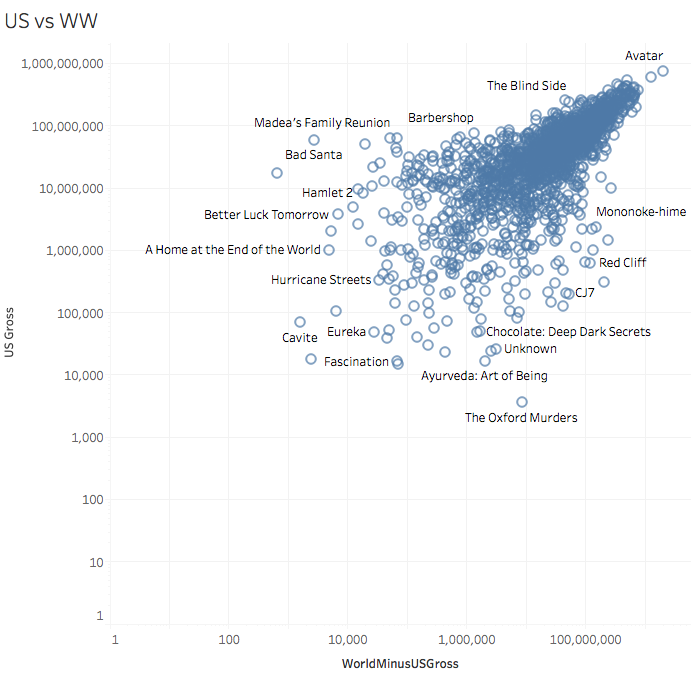
We now turn to looking at measures of a films' box office success. Our dataset contains both US Gross and Worldwide Gross fields. As the worldwide results should contain the US results, we first create a new variable that subtracts the US figures from the worldwide result.
This plot shows a scatter plot (with log base 10 scaled axes) comparing those two. We can see that by and large US gross and Worldwide (minus US) gross follow similar patterns. Based on this high level of association, we will largely focus on US gross in subsequent plots.
On the edges of the distributions we find films that are either popular in the US but less so elsewhere (or vice versa). High-grossing films in the US (but not elsewhere) include the Barbershop films and Bad Santa. High-grossing films outside the US unsurprisingly consist of foreign-made films. And a few films are not popular anywhere... :)
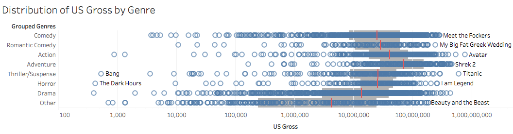
This log-scaled dot plot shows the distribution of US gross by genre. Each film is included, along with reference lines for the interquartile range (middle 50% of the data, in grey) and median values (in red). We see that, on median, Adventure films have the greatest revenue, followed by Action films. Next, comedies (both romantic and otherwise), Thrillers, and Horror films show similar central tendencies.
We also note differences in the tails of the distribution, as some genres have a larger proportion of films with very low US gross. For example, the Other category – which includes documentaries and concert films – fits this pattern.
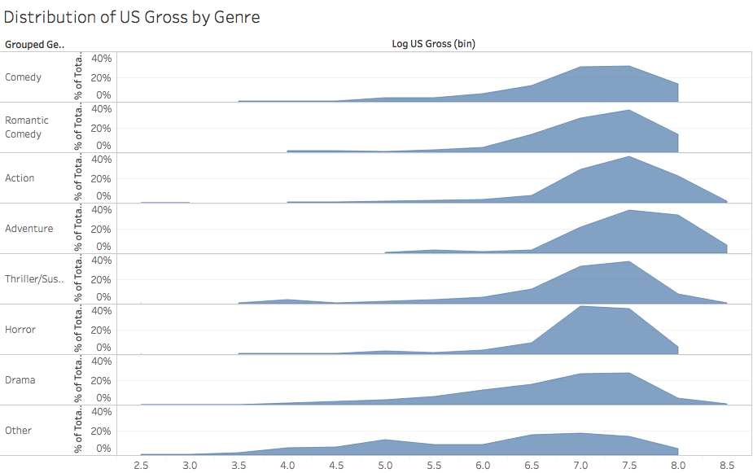
This plot shows an alternative view of the previous chart, but showing a normalized histogram to give a better sense of the shape of the per-genre probability densities for US revenue. The y-axis shows the total percentage of records (within that genre) occurring within a given bin.
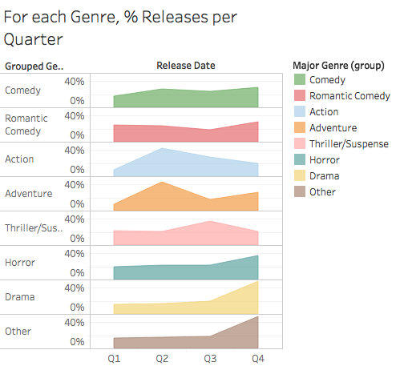
We now move on to examine seasonal patterns. This plot shows the percentage of US gross for films released in each financial quarter, subdivided by genre. The genres have been sorted by peak release season. We see that Comedy proceeds are largely steady throughout the year. Action and Adventure films peak in the spring and early summer, whereas Thriller/Suspense films peak in the late summer. Horror movies peak in Q4 (perhaps around Halloween?) and Dramas also peak in Q4 (released in time for Oscar consideration?). The Other category also peaks in Q4, perhaps with musicals or concert films targeting a holiday release?
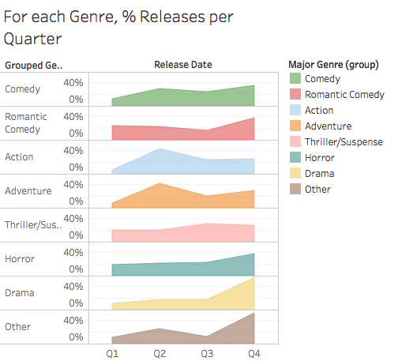
Do worldwide trends match the US trends? This plot is identical to the prior chart, but with US gross replaced by Worldwise (minus US) gross. We see very similar patterns as before.
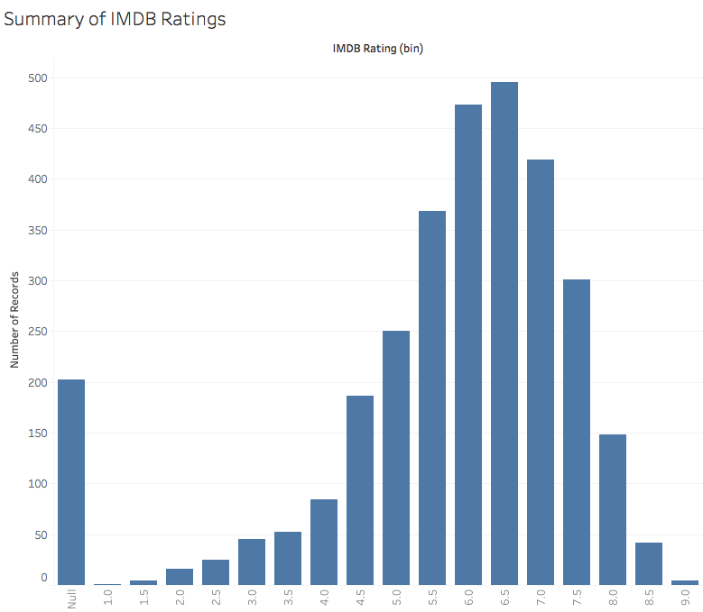
Having investigated the relationship between ticket sales and genre, we now turn our attention to incorporating ratings. This plot shows a histogram of IMDB user ratings. We see a positively-skewed bell curve shape with, a modal rating around 6.5. This is higher than neutral: is this because people in general like movies, or is there sample bias in the data? We also see a number of "null" ratings, for which we are missing data.
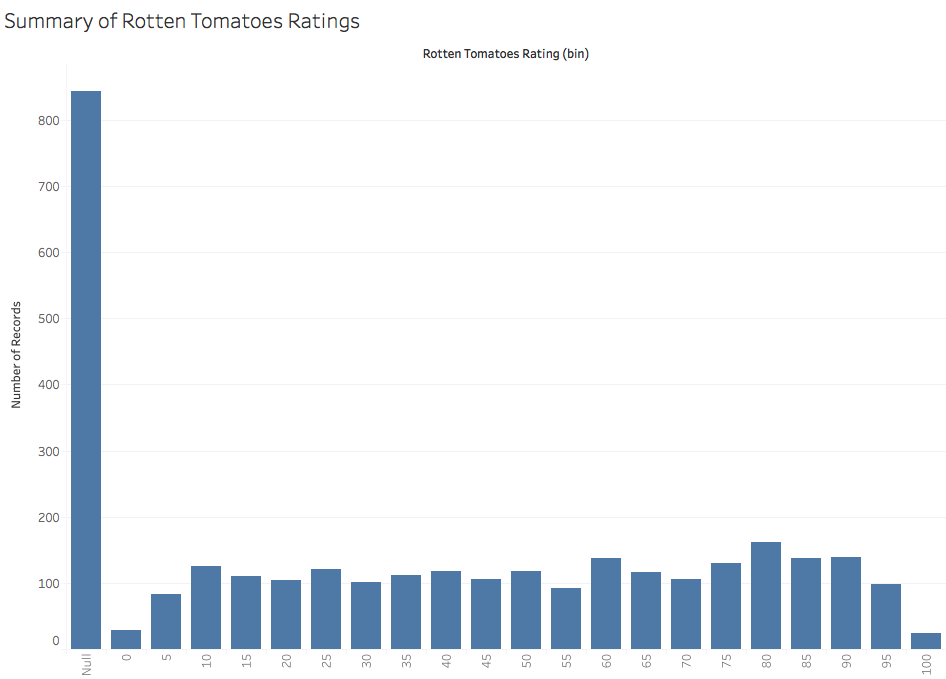
This plot shows a histogram of critic ratings from the site Rotten Tomatoes. Similar to the IMDB ratings, there are a number of "null" (missing) values. Unlike the bell-curve shape of IMDB ratings, the shape of Rotten Tomatoes ratings indicates a more uniform distribution. This discrepancy may be due to the different mechanisms: IMDB simply aggregates user ratings on a 1-10 scale, while Rotten Tomatoes shows the 0-100 percentage of thumbs-up reviews (i.e., like coin tosses) from a collection of critics.
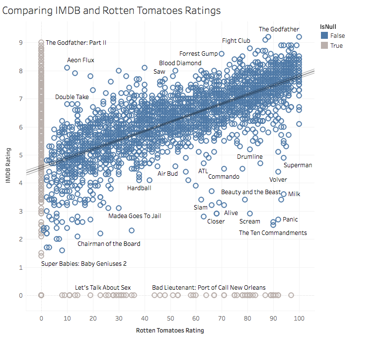
This scatter plot compares the IMDB and Rotten Tomatoes ratings directly. We see that the two are highly correlated (an observation supported by the least-squares regression trend line). Films popular in one system tend to be popular in the other, notably including The Godfather, which has the highest score in both sets of ratings. However, we can also find bivariate outliers that are popular with users but not critics (or vice versa). For example Aeon Flux is popular among viewers but not critics. Meanwhile, Panic is rated highly by critics but unloved by viewers.
For context, we also include films that have a null score in one of the rating sets in gray along the edges of the chart.
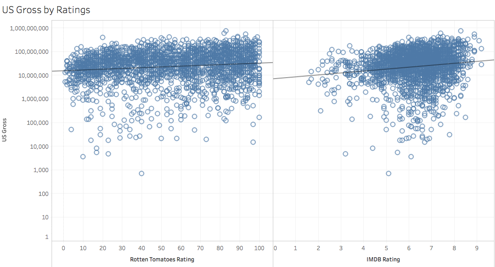
Now we explore our final question: does the "quality" of a film (as reflected by its ratings) affect the box office ticket sales. To address this question, this visualization consists of two side-by-side scatter plots, showing the relationship between either IMDB and Rotten Tomatoes ratings and US gross. We also include trend lines, fitted with an exponential model to account for the log-scaled axis for US gross. Both the plots and the trend line indicate a positive relationship (higher ratings, higher gross on average), but with a very shallow slope.
Summary
The take-away? Better films do seem to make more money, but the effect is weak. Perhaps this is a function of a Hollywood strategy of pre-release marketing to hype up a film before word-of-mouth spreads? So while studios might strive to make great films, it seems that other, more easily controlled, factors such as genre and release schedule might lead to more reliable projections of future ticket sales.